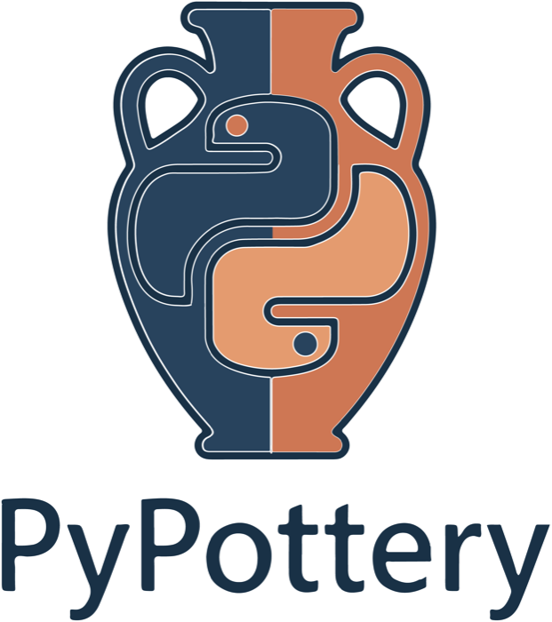
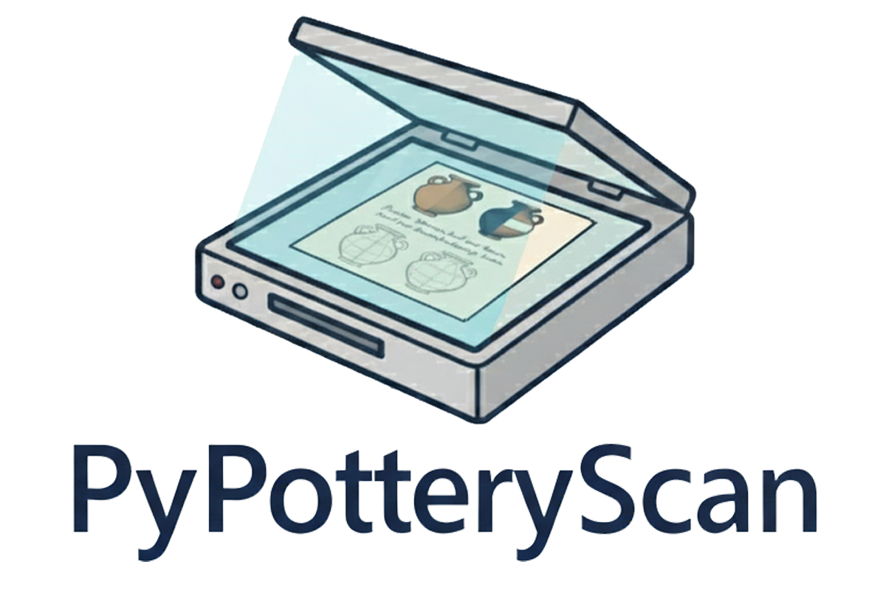
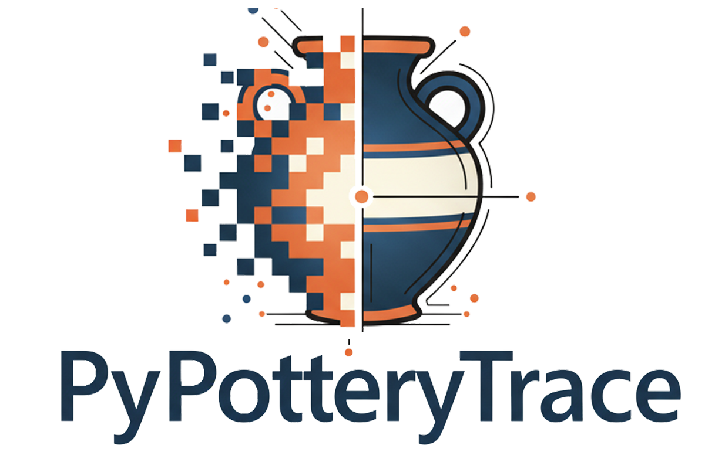
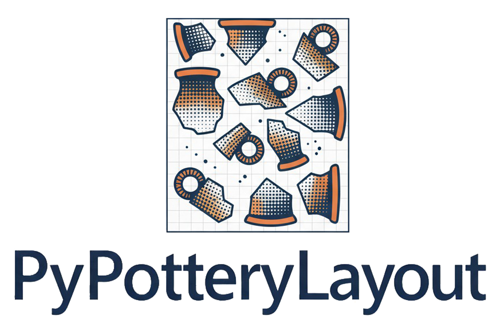
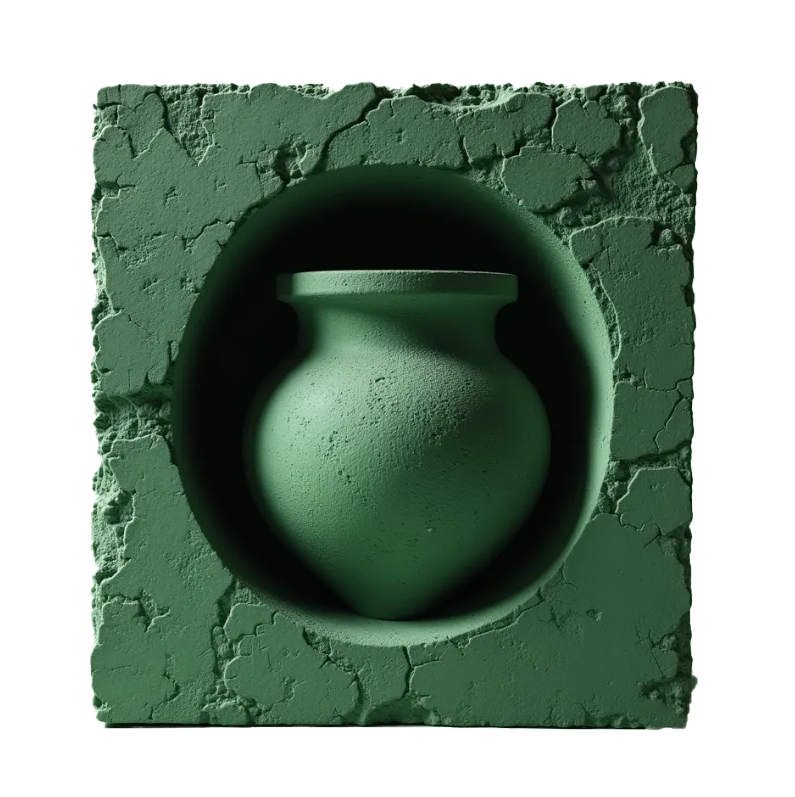
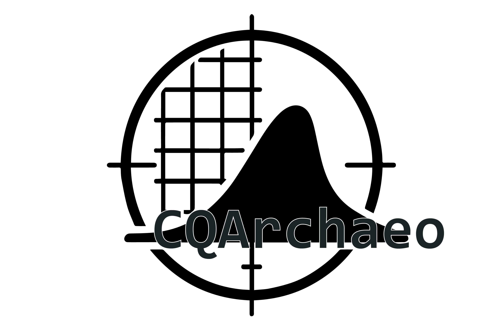

PyPottery
Launcher and documentation
The entry point to the suite. A launcher installs and updates every tool, with no Python installation required, and the documentation has one guide per tool. Runs locally on Windows, macOS and Linux.
Open-source tools for processing, comparing and publishing archaeological pottery data. The pipeline papers are listed under publications.
Every manual step of the classical documentation workflow has a counterpart: capture drawings, refine them, publish plates. Use the whole chain or only the step you need. Everything runs on your own computer, so unpublished finds stay private.

Launcher and documentation
The entry point to the suite. A launcher installs and updates every tool, with no Python installation required, and the documentation has one guide per tool. Runs locally on Windows, macOS and Linux.






Computer vision pipeline
A computer vision pipeline for archaeological drawings, evaluated against manual and laser-aided documentation.

